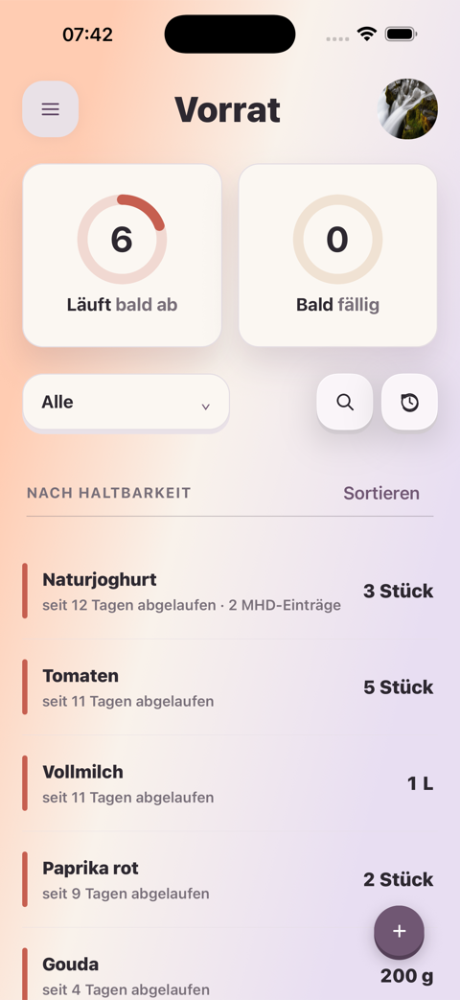

fam · UI-Richtung · Referenzscreens
Wie sitzt der fam-Kreis in eurer echten App?
Die Screens im Gerät sind die vorhandenen fam-Screenshots. Nur der neue Kreis und sein geöffnetes Sheet sind ergänzt. So beurteilen wir ausschließlich Platzierung, Größe und Hierarchie.
↗Keine neue App-Oberfläche: Gradient, Header, Cards, Profilbild, bestehende Plus-Aktion und Typografie bleiben aus der realen Oberfläche sichtbar.

fam
Hi Marco
Wobei soll fam euch gerade helfen?
✦
Mit fam startenDer Einstieg öffnet sich über dem Dashboard.›＋
Bereich auswählenVorrat, Einkauf oder Essensplan.›…
Etwas anderesDer Kreis bleibt offen für weitere Ideen.›
fam · Vorrat
Hi Marco
Du bist gerade im Vorrat. Wobei soll fam euch helfen?
✦
Mit diesem Bereich startenDer Vorrat bleibt im Hintergrund sichtbar.›＋
Anderen Bereich öffnenDen Kontext später wechseln.›fam · Vorrat
Hier kann fam anknüpfen
Der Kreis erscheint nur neben einem sichtbaren, relevanten Bereich.
✦
Mit dem Vorrat startenDer aktuelle Kontext ist schon ausgewählt.›…
SchließenOhne weitere Aktion zurück zum Vorrat.×